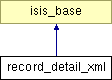

Main Page
Namespaces
Classes
Files
Class List
Class Hierarchy
Class Members
record_detail_xml Class Reference
Inheritance diagram for record_detail_xml:

List of all members.
Public Member Functions
record_detail_xml
($mfn)
_set_result_detail
()
_set_rec_detail
()
get_detail
()
Public Attributes
$mfn2show
= ''
$result_detail
= array()
$rec_detail
= ''
The documentation for this class was generated from the following file:
contrib/igloo/lib/rec_detail_xml.inc.php
All
Classes
Namespaces
Functions
Variables
Generated on Tue Mar 30 14:47:16 2010 for IsisReader by
1.6.1
 1.6.1
1.6.1